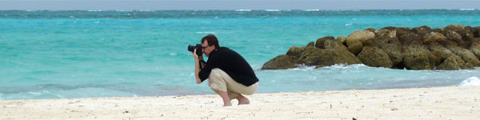

<div class="row">
  <article class="ten columns offset-by-one post">
    <h3>About Chris</h3>
    <p>I am a photographer and web-developer from Chicago, IL. I specialize in landscape and nature photography, but I also love shooting portraits, band promos, and concert photography whenever I get the chance. I have been in love with photography since the early 90's when I picked up my first film SLR, making the jump to digital in 2003 and never looking back. I still shoot with my trusty old Canon EOS 10D.</p>
    <h3>About Gorilla-Studios</h3>
    <p>Gorilla-Studios was originally launched in 2003 as a simple portfolio site to showcase my work, but it has taken on many different forms over the years. Currently Gorilla-Studios is focused on sharing my experiences with beginner and amateur photographers through my blog and also displaying my growing portfolio. This site is focused on helping photographers in any stage of their craft. Covering not only technique but workflow &amp; technology solutions, examples of when things work perfectly AND when things go wrong, processing &amp; photo editing, tons of quick tips &amp; tricks, and lots of encouragement &amp; support.</p>
    
  </article>
</div>
